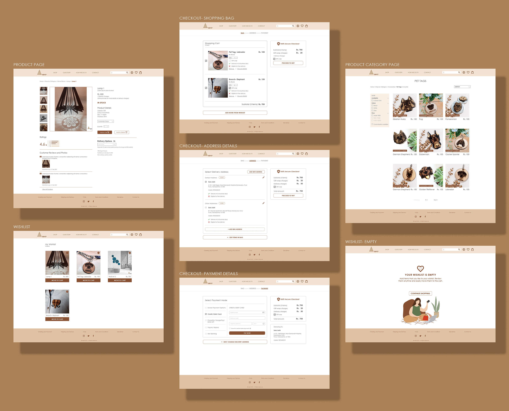

AAKRITI: E-COMMERCE WEBSITE DESIGN
THE CLIENT
Aakriti is a small, local design start-up focusing on creating products by revamping dry wastes and using each material to its fullest. It is a creative junkyard where even the tiniest pieces of scrap are used innovatively.
THE BRIEF
- To design a brand-new E-commerce website for the local start-up Aakriti, based in Pune.
- The start-up had seen a significant increase in customers & sales through their Instagram page and was now looking at expanding their reach by creating a professional website to enable easier online purchasing & shipping outside Pune.
- The site needed to encapsulate its philosophy of sustainability, showcase its innovative products, give a personal touch, and convey that the brand was trustworthy.
MY ROLE
- Led the design of Aakriti’s web platform by researching user’s pain points to design a better user experience.
- Researched, prioritized, and negotiated ideas that met both, customer needs and business goals.
- Conducted user interviews and user testing.
- Designed the site map, wireframes, prototypes, and the final UI for the website.
- Co-ordinated with the developer to ensure proper implementation of the design and back-end.
PERSONAS
For whom is the website being designed? Who is the target user group?
According to the client discussions and based on their previous users, we narrowed down the type
of audience we were going to target. I then interviewed my friends, neighbours, and family to come
up with the personas. The following are provisional personas based on the seven user interviews I
conducted. I was referring to these personas throughout the project.


USER FLOW
Based on the user interviews and the personas, I created two user journey maps focusing on the path
users would take to buy a product from the website. This ultimately helped in mapping out the number
of steps required to conduct the task.
With the help of these user journey maps, I
- Managed to identify and highlight the problems users faced while shopping online,
- Understood how users interacted with similar websites and what they expected from them,
- Discovered user's pain points and learned more about what they felt at different stages while using an E-commerce platform,
- Identified functional requirements and gathered ideas about how I could solve some of the problems.

{kind=link}
IDENTIFYING PAIN POINTS AND FOCUS AREAS
While conducting user interviews, most of the people mentioned that even if they liked the products
on an online store, if it was not a well-known brand, trust was one of the main factors that would
decide whether they would actually go ahead and buy something from the website. Hence, making the
brand seem trustworthy through the website was one of the most important goals apart from providing
a seamless user experience.
Based on these observations, I decided the following were “must haves” for the website:
- Easily viewable customer reviews and testimonials.
- Easily accessible contact information for customer queries.
- Detailed product specifications with videos as an added experience.
- Transparency in delivery details and payment information.
- Assurance of secure payment channels.
SITE NAVIGATION MAP
The next step was to design the navigation system. I was given an inventory of the products
that the store would be selling online. I started with organising the products in clear and
understandable categories. For this, a card sorting exercise was conducted with the users.
Open Card Sort- Here, the participants were asked to arrange the products into groups that
made sense to them, then label each group with titles they felt precisely described the content.
This gave me an early indication of possible ways to group the products and name the groups.
Closed Card Sort- From the open card sort results, I conducted a closed card sort by selecting
the most common group labels, and presenting them to the users to select where they felt the
individual products would fit under these labels. This helped clarify whether those labelled
categories would work for the majority of the users moving forward with the design.
{kind=link}
{kind=link}
From the results of the card sorting, I created a site map and navigation chart. With the site map acting as a visual representation of the website layout, demonstrating the global elements as well as the primary and secondary navigation.

DESIGN SOLUTIONS- WIREFRAMES
After exploring all the insights from the exploration phase, I started designing the online store. For this, the main tools used were paper sketches and then Adobe XD for making interactive prototypes for user testing.
{kind=link}
Lo-Fidelity Wireframe-Our Story

Lo-Fidelity Wireframe-How we do it

{kind=link}
{kind=link}
Lo-Fidelity Wireframe-Wishlist

{kind=link}
Lo-Fidelity Wireframe-Account Details page

USER TESTING FEEDBACK AND LEARNING
- Users needed more convenience in terms of viewing product images without opening a new page for each product.
- The “Customization available” and “Bulk order options available” sticker was perceived by many as a button.
- Status bar on every stage of the buying process was missing, which increased user’s stress levels during online shopping.
VISUAL DESIGN
Objectives:Clean and minimalistic design with abundant white space on product pages for users to focus on the product content.
Colour palette:
The visual design and UI needed to resonate with the brand identity and convey the brand philosophy within a glance. Hence, I decided to use a subtle and earthy colour palette to highlight the practices of sustainability and upcycling that Aakriti is based on. The colours are also an indication of the materials used by Aakriti for its products (i.e., MDF, paper tubes, cardboard, etc.).
Typography:
The idea was to use a clean, modern font which is also a web-safe font ensuring faster load time for the website.
Hi-Fidelity Mockup-Homepage (Click on image to enlarge & zoom)
{kind=link}
Hi-Fidelity Mockups (Click on image to enlarge & zoom)
{kind=link}
Hi-Fidelity Mockups (Click on image to enlarge & zoom)

{kind=link}
Hi-Fidelity Mockups (Click on image to enlarge & zoom)
{kind=link}
Adobe XD Prototype video
Based on the user testing, following features were added in the high-fidelity prototypes:
- Placement of the “customization available” sticker changed and the bulk order option shown after opening the product page.
- Status bar added to indicate stages of the buying/ checkout process.
- Buttons added to go to the previous page to edit items in bag and edit address details during the checkout process.
After another round of user testing with the high fidelity prototype, I also decided to add the following features to the website to enhance the user experience. These features are in the process of discussion and development.
- Implementation of quick-view solution- a carousel to check all photos of a product before clicking to open a new page.
- Incorporate a live statistic feature on the homepage indicating the number of successful orders delivered, and the amount of material upcycled. This would help the users to trust the brand more and encourage them to shop from the website without any hesitation and concerns.
TAKEAWAYS
This project was a learning experience which broadened my understanding of the user’s needs, the information he/she consumes and the way the user perceives a website. Few of the important learnings were:
- Process and planning are extremely important and essential. It helps in charting out a roadmap to navigate through the challenges that come along the way.
- Simplicity is strength. Less is more.
As designers, there is a tendency to get attracted to trendy and visually appealing designs. But designing for functionality, high efficiency, and solving user problems should be the primary goal. - Design is a constant iteration of improving the experience for the end user. User testing should be conducted even after launching the website in order to ensure seamless user experience.